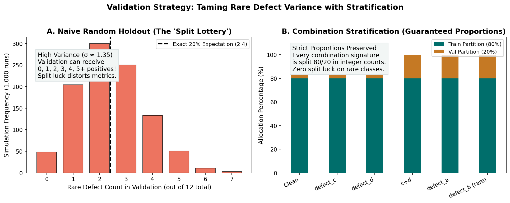

Validation Strategy: Multi-Label Stratification for Rare Defect Detection
A reliable validation strategy is the compass of every machine learning project. If your validation score rises while your actual test performance falls, your compass is broken, and every subsequent engineering decision—from choosing architectures to tuning learning rates—will be guided by noise.
In industrial surface anomaly detection, establishing an honest validation split is especially challenging because anomalies are rare events. Furthermore, our dataset is multi-label: images can display zero, one, or multiple co-occurring defect classes.
In this guide, you will learn why naive random splitting causes extreme variance for rare defect categories, how multi-label combination stratification stabilizes validation metrics, and how to protect your pipeline against subtle data leakage.
1. Motivation: The "Split Lottery" of Rare Defects
Consider a dataset where one defect class—say, defect_b—appears in only a small fraction of training images (for instance, around \(2.7\%\) prevalence).
Suppose you evaluate your model using a single \(80/20\) train/validation holdout (where \(20\%\) of images are held out for validation). If you partition images purely at random, the number of positive defect_b images allocated to the validation set is a random variable drawn from a hypergeometric distribution.
The Variance of Random Sampling
Let \(N\) be the total number of images, \(K\) be the number of positive instances of a rare defect, and \(n = 0.20 \times N\) be the size of the validation partition.
The expected number of positive instances in validation is:
However, the standard deviation of this draw is:
For a common class (where \(K\) is large), \(\frac{\sigma}{\mathbb{E}[X]}\) is small (perhaps \(\pm 3\%\)). But for an extremely rare class, the relative standard deviation \(\frac{\sigma}{\mathbb{E}[X]}\) can exceed \(\pm 50\%\)!
Random Holdout (The Split Lottery):
Draw A (Lucky Split): Validation receives 1.6× the expected rare defects.
Draw B (Unlucky Split): Validation receives 0.4× the expected rare defects.
Draw C (Worst Case): Validation receives ZERO rare defects!If your validation partition receives zero or near-zero instances of a rare defect:
- Per-class metrics (like Foreground Dice for
defect_b) become undefined (\(0/0\)) or hyper-sensitive: a single misclassified pixel can collapse the score from \(0.80\) to \(0.00\). - Your validation score reflects split luck, not model architecture or learning progress.

Figure 4.1: (A) Naive random holdout distribution across 1,000 simulations showing high variance and the risk of empty validation sets. (B) Multi-label combination stratification guaranteeing proportional representation across all defect combinations.2. Multi-Label Combination Stratification
In standard single-label classification (e.g., ImageNet or MNIST), StratifiedKFold easily partitions classes by stratifying on the single target label. But in multi-label segmentation, each image possesses a vector of binary labels:
With 4 binary classes, there are \(2^4 = 16\) possible combinations:
Possible Defect Combination Signatures:
• "clean" (no defect present)
• "defect_a" (isolated defect a)
• "defect_b" (isolated defect b)
• "defect_c" (isolated defect c)
• "defect_d" (isolated defect d)
• "defect_a+defect_c" (co-occurring a and c)
• "defect_b+defect_c" (co-occurring b and c)
... up to all 4 co-occurringThe Combination Stratification Algorithm
To guarantee balanced representation without distorting co-occurrence patterns:
- Group by Image ID: Condense the 4 rows of
train.csvper image into a single record. - Compute the Combination Signature: For each image, create an alphabetical string indicating all active defect categories (or
"clean"if no defect is present). - Partition Stratified by Signature: Allocate the holdout within each combination stratum so that the validation set receives the exact same proportion of clean images, single defects, and rare multi-defect pairs as the full dataset.
# Constructing the Combination Signature
def get_combination_signatures(df):
# Filter to active defect annotations
active = df[df["mask_rle"].str.strip() != ""]
# Group by image and join sorted defect names
signatures = active.groupby("image_id")["defect_type"].apply(lambda s: "+".join(sorted(s)))
# Map back to all image IDs (unannotated images become 'clean')
all_signatures = pd.Series(index=df["image_id"].unique(), data="clean", dtype=object)
all_signatures.update(signatures)
return all_signatures3. The Edge Case: Singleton Combinations
When you inspect the combination distribution in real-world industrial data, you will discover that some multi-defect combinations are extremely rare—appearing in only 1, 2, or 3 images across the entire dataset!
Mathematically, you cannot split a single sample into an \(80\%\) train and \(20\%\) validation slice. You must establish a deterministic rule:
- Rule Option A (Train Priority): Allocate singletons (\(N=1\)) to the training partition. Rationale: The neural network cannot learn a complex multi-defect interaction if it never sees it during training.
- Rule Option B (Iterative Stratification): Use an algorithm like Sechidis et al.'s Iterative Multi-label Stratification, which greedily optimizes marginal label distributions rather than exact combination strings.
Whichever rule you adopt, document it explicitly and fix your random seed (seed=42) so that your split is \(100\%\) reproducible across runs.
4. Preventing Data Leakage: The Verification Checklist
Data leakage occurs when information from outside the training dataset is used to create or tune the model. In segmentation pipelines, leakage takes several subtle forms:
1. Image-Level Isolation Check
Never allow an image ID to appear in both training and validation sets:
2. Preprocessing & Normalization Leakage
If you normalize images using dataset mean \(\mu\) and standard deviation \(\sigma\):
- WRONG: Computing \(\mu\) and \(\sigma\) across all 11,393 images in
data/public/train/. (The validation set leaks into your training statistics!) - CORRECT: Computing \(\mu\) and \(\sigma\) strictly on your \(80\%\) training partition, then applying those exact frozen parameters to normalize the \(20\%\) validation partition.
3. Holdout Overfitting (Validation Degradation)
If you train 50 different model variations and repeatedly tune decision thresholds or minimum-area filters to maximize the score on your single \(20\%\) validation holdout, you will overfit the validation set.
- The validation score will steadily climb from \(0.62\) to \(0.71\), but your performance on the hidden Kaggle test leaderboard will fail to improve.
- Defense: Reserve threshold searches for candidate models only, or adopt \(5\)-fold cross-validation when conducting extensive hyperparameter sweeps.
5. Single Holdout vs. 5-Fold Cross-Validation
| Property | Single \(80/20\) Holdout | 5-Fold Cross-Validation |
|---|---|---|
| Training Budget | \(1\times\) training time (Fast iteration) | \(5\times\) training time (Substantial compute) |
| Validation Size | \(20\%\) of training data | \(100\%\) of data evaluated out-of-fold (OOF) |
| Variance on Rare Classes | Low (if combination-stratified), but fixed | Averaged across all 5 folds; highly robust |
| Ensembling | Single model inference | Natural 5-model ensemble for test predictions |
| Recommended Stage | Milestone 2 Baseline Pipeline | Milestone 3 Advanced Modeling |
For Milestone 2, a single combination-stratified \(80/20\) holdout provides the optimal balance of speed, stability, and fast debugging.
6. Common Mistakes and Diagnostics
| Bug / Pitfall | Root Cause | Observable Symptom | Practical Diagnostic |
|---|---|---|---|
| Duplicate Image IDs | Failing to deduplicate image IDs when creating splits. | Same image ID appears in both partitions. | Assert len(set(train_ids) & set(val_ids)) == 0. |
| Unstratified Split | Calling standard KFold or random sampling. |
Validation set receives 0 positive samples for rare defect. | Check val_df[val_df['defect_type'] == 'defect_b']['mask_rle'].count() > 0. |
| Leaked Normalization | Calculating Z-score mean/std on all images combined. | Small optimistic score bias; poor test generalizability. | Save normalization parameters from train_df only. |
| Unfixed Random Seed | Not setting random_state=42 in split generator. |
Training and validation partitions shift on every script execution! | Verify that hash(tuple(sorted(val_ids))) is identical across runs. |
7. Decisions You Must Make
- Holdout Ratio: Standard ratios are \(80/20\) (9,114 train / 2,279 val) or \(85/15\). Choose a ratio that leaves at least 50+ positive samples of your rarest defect in validation.
- Stratification Granularity: Will you stratify on exact combination strings (e.g.,
"defect_a+defect_c"), or will you use an iterative multi-label stratification library? - Artifact Persistence: Save your split assignments to a CSV file (e.g.,
reports/folds.csvorsplits/holdout.csvcontainingimage_id,split) so that every subsequent experiment loads the exact same partition.
8. Try It: Build a Combination Stratified Split on Toy Data
Run this self-contained script to observe how combination stratification balances rare classes across a toy dataset of 10 fictional images:
import pandas as pd
from sklearn.model_selection import StratifiedShuffleSplit
# 1. Create toy dataset of 10 images with combination labels
# Image 0..4: clean; Image 5..7: common defect c; Image 8..9: rare defect b
toy_data = pd.DataFrame({
"image_id": [f"STRIP_{i:04d}" for i in range(10)],
"combo": ["clean"] * 5 + ["defect_c"] * 3 + ["defect_b"] * 2
})
print("Full Toy Distribution:")
print(toy_data["combo"].value_counts())
# 2. Stratified 80/20 split (8 train, 2 val)
splitter = StratifiedShuffleSplit(n_splits=1, test_size=0.2, random_state=42)
train_idx, val_idx = next(splitter.split(toy_data, toy_data["combo"]))
train_set = toy_data.iloc[train_idx]
val_set = toy_data.iloc[val_idx]
print("\nTrain Partition (8 images):")
print(train_set["combo"].value_counts())
print("\nValidation Partition (2 images):")
print(val_set["combo"].value_counts())
# Assertions
assert len(val_set) == 2
assert "defect_b" in val_set["combo"].values, "Rare defect missing from validation!"
assert len(set(train_set["image_id"]) & set(val_set["image_id"])) == 0, "Leakage detected!"
print("\n✓ Stratified split verified: rare class represented, zero leakage!")9. Authoritative Documentation & References
- Sechidis et al. (2011): On the Stratification of Multi-Label Data
- Scikit-Learn
StratifiedShuffleSplit: Scikit-Learn Splitter Documentation - Iterative Stratification Library: Iterative-Stratification on GitHub